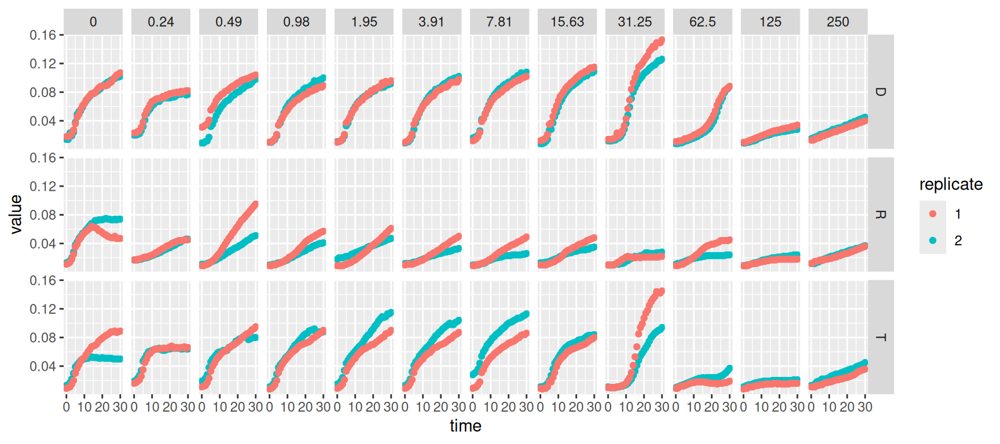
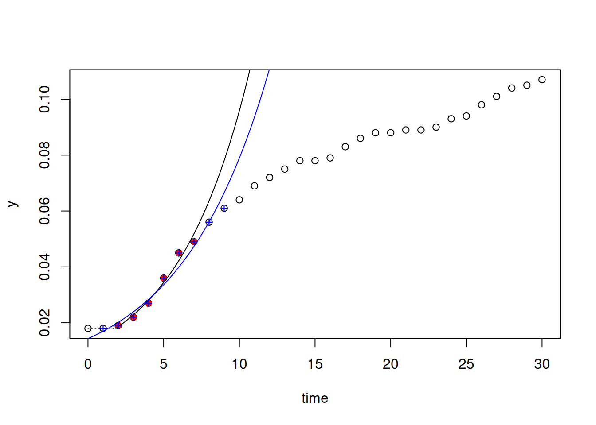
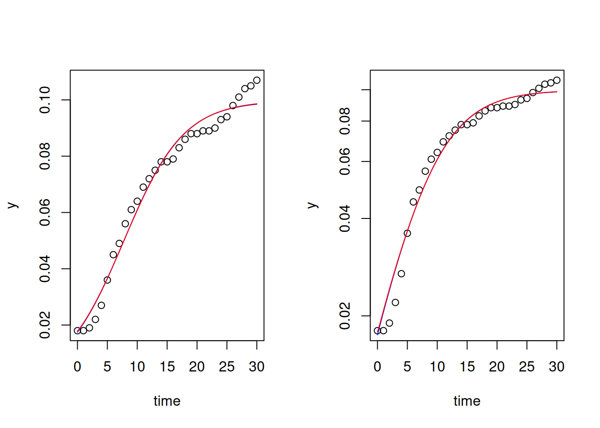
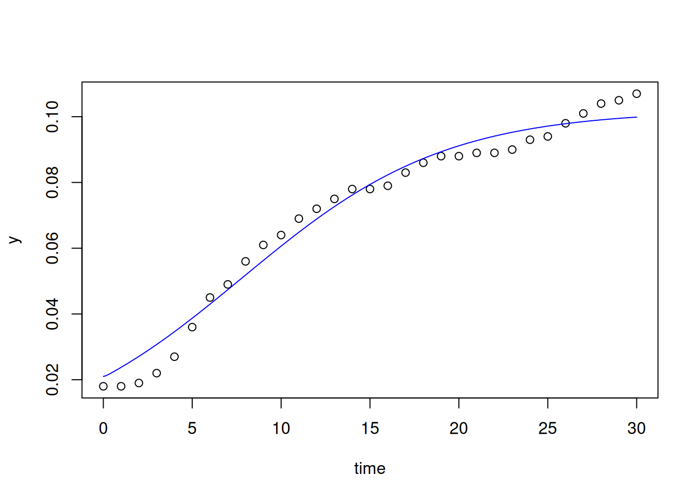
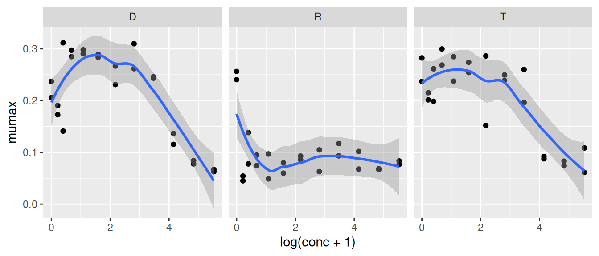
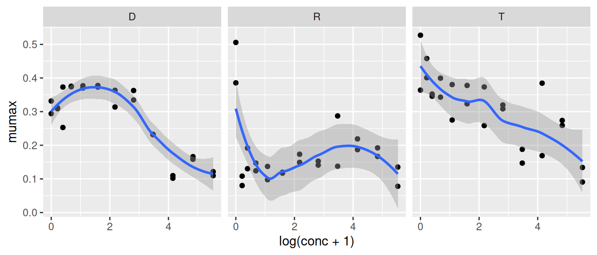

Estimation of Growth Rates with Package growthrates, Part 1: Introduction
2026-11-21
Source:vignettes/part1-introduction.qmd
1 Introduction
The growth rate of a population is a direct measure of fitness. Therefore, determination of growth rates is common in many disciplines of theoretical and applied biology, e.g. physiology, ecology, eco-toxicology or pharmacology. This package aims to streamline estimation of growth rates from direct or indirect measures of population density (e.g. cell counts, optical density or fluorescence) determined in batch experiments or field observations. It should be applicable to different species of bacteria, archaea, protists, and metazoa, e.g. E. coli, Cyanobacteria, Paramecium, green algae or Daphnia.
The determination of growth rates from chemostat and semi-continuous cultures is currently not covered by the package, but we are open to include it, depending on your interest and the availability of data. The package is still under development and feedback is highly welcome.
2 Methods
The package includes three types of methods:
- Nonlinear fitting of parametric growth models like the logistic or the Gompertz growth model. Parametric model fitting is done by using package
FME(Flexible Modelling Environment) of Soetaert and Petzoldt (2010). In addition to growth models given in closed form (i.e. empirical regression equations or analytical solutions of differential equations) it is also possible to use numerically integrated systems of differential equations. Such models are then solved with packagedeSolve(Soetaert et al. 2010). - Fitting of linear models to the period of exponential growth using the “growth rates made easy” method of Hall et al. (2014).
- Nonparametric growth rate estimation by using smoothers. R contains several powerful smoothing methods that can be leveraged for this purpose. The currently implemented method uses function
smooth.spline, similar to the packagegrofit(Kahm et al. 2010).
The package contains methods to fit single data sets or complete series of data sets organized in a data frame. It also contains functions for extracting results (e.g. coef, summary, deviance, obs, residuals, rsquared and results) and methods for plotting (plot, lines). The implementation follows an object-oriented style, so that the functions above determine automatically which method is used for a given class of objects.
3 Installation
The stable version of the package can be installed as usual from within R or RStudio like any other package, or with:
install.packages("growthrates")The development version and full source code are available from https://github.com/tpetzoldt/growthrates.
4 Data set
The data set for demonstrating main features of the package was provided by Claudia Seiler from one of a series of plate reader experiments carried out at the Institute of Hydrobiology of TU Dresden. It describes growth of three different strains of bacteria (D = Donor, R = Recipient, T = transconjugant) in dependence of a gradient of the antibiotic tetracycline.
After loading the package:
we load the data and inspect its structure with str:
'data.frame': 2232 obs. of 5 variables:
$ strain : Factor w/ 3 levels "D","R","T": 3 3 3 3 3 3 3 3 3 3 ...
$ replicate: int 2 2 2 2 2 2 2 2 2 2 ...
$ conc : num 0 0 0 0 0 0 0 0 0 0 ...
$ time : int 0 1 2 3 4 5 6 7 8 9 ...
$ value : num 0.013 0.014 0.017 0.022 0.03 0.039 0.042 0.045 0.048 0.049 ...And we can also inspect the full data set with View(growthrates) or look at the first few lines with head:
head(bactgrowth) strain replicate conc time value
1 T 2 0 0 0.013
2 T 2 0 1 0.014
3 T 2 0 2 0.017
4 T 2 0 3 0.022
5 T 2 0 4 0.030
6 T 2 0 5 0.039or we can plot raw data with ggplot2:
library(ggplot2)
library(dplyr)
bactgrowth |>
mutate(replicate = factor(replicate)) |>
ggplot(aes(time, value)) +
geom_point(aes(color = replicate)) +
facet_grid(strain ~ conc)
Or the same with the lattice package:
While the lattice figure is not shown here, it has some nice advantages. The call is even more compact and the applied formula syntax dependent_variable ~ explanation_variable | grouping_variable can also be used in a similar manner by the growth curve fitting functions starting with all_* to avoid loops or external grouping.
5 Estimation of growth rates
Package growthrates can determine growth parameters from single experiments, from a complete series of experiments, or from subsets in one step. Here we start with an overview of the “single subset” methods and then show examples for fitting growth models to the full data set. More examples can be found on the help pages of the package.
Single data sets
Single data sets can be analysed with functions fit_easylinear, fit_growthmodels or fit_splines. As a prerequisite, single data sets containing only one treatment have to be extracted from a complete experiment, which can be done with function multisplit. In the following example, the full data table is first split into a list of experiments according to a vector of criteria and then the first experiment is extracted:
5.1 Easy Linear Method
splitted.data <- multisplit(bactgrowth, c("strain", "conc", "replicate"))
dat <- splitted.data[[1]]In the next step, model fitting is done, e.g. with the “easylinear” method:
fit <- fit_easylinear(dat$time, dat$value)This method fits segments of linear models to the log-transformed data and tries to find the maximum growth rate. Several functions exist to inspect the outcome of the model fit, e.g.:
summary(fit)
Call:
lm(formula = y ~ x)
Residuals:
1 2 3 4 5 6
0.02113 -0.03716 -0.03727 0.04552 0.06376 -0.05598
Coefficients:
Estimate Std. Error t value Pr(>|t|)
(Intercept) -4.39425 0.06429 -68.35 2.74e-07 ***
x 0.20490 0.01336 15.34 0.000105 ***
---
Signif. codes: 0 '***' 0.001 '**' 0.01 '*' 0.05 '.' 0.1 ' ' 1
Residual standard error: 0.05587 on 4 degrees of freedom
Multiple R-squared: 0.9833, Adjusted R-squared: 0.9791
F-statistic: 235.3 on 1 and 4 DF, p-value: 0.0001053
coef(fit) # exponential growth parameters y0 y0_lm mumax lag
0.0180000 0.0123482 0.2048985 1.8392607
rsquared(fit) # coefficient of determination (of log-transformed data) r2
0.9832876
deviance(fit) # residual sum of squares of log-transformed data[1] 0.01248744Plotting can then be done either in log-scale or after re-transformation:
and in addition to the original method of Hall et al. (2014) it is also possible to modify the default settings of the algorithm:
fitx <- fit_easylinear(dat$time, dat$value, h = 8, quota = 0.95)
plot(fit)
lines(fitx, pch = "+", col = "blue")
5.2 Parametric nonlinear growth models
A parametric growth model consists of a mathematical formula that describes the growth of a population (e.g. grow_logistic) and its parameters (e.g. y0, mumax, and K). Fitting a parametric model is the process of estimating an optimal parameter set that minimizes a given quality criterion. Here we use the method of least squares, also known as ordinary least squares regression (OLS). As most of the growth models are non-linear, we always need a good set of start parameters p. It is wise to choose values for start parameters carefully by considering the main properties of the selected growth model (e.g. that the carrying capacity K should be around the observed maximum of the data), or by experimentation, i.e. plotting the model together with the data. In order to prevent unrealistic (e.g. negative) parameter values, it is optionally possible to specify box-constraints (upper and lower). For difficult problems one may consider changing the involved model fitting algorithm from Marquardt ("Marq") to something else, e.g. to "L-BFGS-B". Details can be found on the ?modFit help page.
p <- c(y0 = 0.01, mumax = 0.2, K = 0.1)
lower <- c(y0 = 1e-6, mumax = 0, K = 0)
upper <- c(y0 = 0.05, mumax = 5, K = 0.5)
fit1 <- fit_growthmodel(FUN = grow_logistic, p = p, dat$time, dat$value,
lower = lower, upper = upper)
p <- c(yi = 0.02, ya = 0.001, kw = 0.1, mumax = 0.2, K = 0.1)
lower <- c(yi = 1e-6, ya = 1e-6, kw = 0, mumax = 0, K = 0)
upper <- c(yi = 0.05, ya = 0.05, kw = 10, mumax = 5, K = 0.5)
fit2 <- fit_growthmodel(FUN = grow_twostep, p = p, time = dat$time, y = dat$value,
lower = lower, upper = upper)
coef(fit1) y0 mumax K
0.01748268 0.20006907 0.09962612
coef(fit2) yi ya kw mumax K
0.009702021 0.008190056 8.060443567 0.197821200 0.099832729
par(mfrow = c(1, 2))
plot(fit1)
lines(fit2, col = "red")
plot(fit1, log = "y")
lines(fit2, col = "red")
5.2.1 Differential equation models
In the two-step model above, growth is described as a two-step process of adaptation of inactive cells and logistic growth of active cells :
with amount of total organisms , and an adaptation rate , intrinsic growth rate , and carrying capacity . The initial abundance (normally ) is split into two separate values, and , that are by default also fitted.
The underlying ordinary differential equation (ODE) model has no simple analytical solution and is therefore solved numerically using a differential solver from package deSolve. Here both the model and the solver are running in compiled code (C resp. Fortran), but it is of course also possible to define user-specified models in R code. Details can be found in Part 2 of the package documentation.
5.2.2 Selective parameter fitting
Despite the fact that the above model is solved as a differential equation, the relatively high number of parameters may need special care, too. In such cases, package growthrates allows fitting subsets of parameters while setting the others to fixed values. In the following, this is done by specifying a subset without initial abundances and in which:
fit3 <- fit_growthmodel(FUN = grow_twostep, p = p, time = dat$time, y = dat$value,
lower = lower, upper = upper, which = c("kw", "mumax", "K"))
summary(fit3)
Parameters:
Estimate Std. Error t value Pr(>|t|)
kw 9.937039 65.514803 0.152 0.881
mumax 0.174992 0.015259 11.468 4.31e-12 ***
K 0.101936 0.002429 41.971 < 2e-16 ***
---
Signif. codes: 0 '***' 0.001 '**' 0.01 '*' 0.05 '.' 0.1 ' ' 1
Residual standard error: 0.004521 on 28 degrees of freedom
Parameter correlation:
kw mumax K
kw 1.0000 -0.8724 0.5219
mumax -0.8724 1.0000 -0.7770
K 0.5219 -0.7770 1.0000
coef(fit3) yi ya kw mumax K
0.0200000 0.0010000 9.9370389 0.1749923 0.1019360
plot(fit3)
We see that summary shows only the fitted parameters whereas coef contains the full set.
Note, however, that start values need to be given in p for all model parameters, i.e. for both the fitted and the fixed ones, while upper and lower bounds for the fixed parameters can be omitted.
5.3 Nonparametric smoothing splines
Smoothing splines are a quick method to estimate maximum growth. The method is called nonparametric, because the growth rate is directly estimated from the smoothed data without being restricted to a specific model formula.
6 Fit multiple data sets without loops
Fitting multiple data sets at once is possible with functions all_easylinear, all_growthmodels and all_splines. Usage is similar for all methods, and the parameters are analogous to the single-fit methods. Both the easy growth rates and the smoothing splines method are quite robust. In contrast to this, parametric fits with function all_growthmodels need more care and a little bit more computational power.
Again, special emphasis should be given to the selection of good starting points. In addition, it is possible to select an alternative optimization algorithm, to enable additional output (trace) or to fine-tune their optimization control parameters. Nevertheless, it should be noted that parametric models have more explanatory power and may therefore be advantageous for basic research.
Nonlinear optimization is done with parallelized code, so multi-core computers can speed up computation.
6.1 Fit smoothing splines to multiple data
It can be a good idea to start with a nonparametric approach like the smoothing spline method to get a first impression and, potentially, to derive start parameters for a parametric model. In the following, we show an example with the smoothing spline method. The function uses a formula interface with the syntax: dependent_variable ~ independent_variable | group1 + group2 + ...:
In this example, smoothness is set to a moderate value (spar = 0.5). Other values between zero and one will result in different degrees of smoothing. If spar is omitted, leave-one-out cross-validation is used to determine smoothness automatically. This works best if the samples over time are true replicates from independent experimental units, instead of pseudo-replicates with potential autocorrelation.
6.2 Fit parametric models to multiple data
Package growthrates allows fitting parametric models to a series of grouped data. The formula interface of function all_growthmodels allows including the name of the nonlinear model (the grow_.... function) and the name of the independent variable (e.g. time) as its first argument, for example as grow_logistic(time, parms). The second argument parms is a dummy argument; its name does currently not (yet) matter. Model fitting can make use of multiple CPU cores to speed up computation. If the ncores argument is omitted, the number of cores is automatically detected while setting ncores = 1 can be useful for debugging.
In the following, let’s fit a Baranyi growth model (Baranyi and Roberts 1995) to the data, a model that considers the lag phase as a period to build up “critical substances” needed for growth. The model is based on a system of two differential equations for which under some simplifying assumptions an analytical solution was presented.
In a first attempt, we fit all parameters of the model:
## initial parameters and box constraints
p <- c(y0 = 0.03, mumax = 0.1, K = 0.1, h0 = 1)
lower <- c(y0 = 0.001, mumax = 1e-2, K = 0.005, h0 = 0)
upper <- c(y0 = 0.1, mumax = 1, K = 0.5, h0 = 10)
## fit growth models to all data using log transformed residuals
many_baranyi1 <- all_growthmodels(
value ~ grow_baranyi(time, parms) | strain + conc + replicate,
data = bactgrowth,
p = p, lower = lower, upper = upper,
transform = "log", ncores = 2)whereas in a second trial, h0 is fixed to a common value to avoid that h0 consumes parts of the effect because of interdependency between h0 and mumax:
## use coefficients of first fit as new initial parameters
pp <- coef(many_baranyi1)
## but set h0 to a fixed value
pp[, "h0"] <- 0.65
## re-fit models
many_baranyi2 <- all_growthmodels(
value ~ grow_baranyi(time, parms) | strain + conc + replicate,
data = bactgrowth,
p = pp, lower = lower, upper = upper,
which = c("y0", "mumax", "K"), transform = "log", ncores = 2)The result of the second fit is shown in the following figure. It may be noted that even better fits are possible with models with more parameters, e.g. Huang (2011), again at the cost that the effect of antibiotics is distributed over several correlated parameters instead of an effect of the maximum growth rate.
6.3 Dose Response Curves
Dependency of growth rate on antibiotic concentration for the three strains with the spline fit and the Baranyi model. Here we first extract a table of results from the fitted objects:
The resulting data frames follow a “tidy structure” ensuring compatibility with ggplot2.
6.3.1 Nonparametric Spline Fits
many_spline_res |>
ggplot(aes(log(conc + 1), mumax)) +
geom_point() +
geom_smooth() +
facet_wrap(~ strain)`geom_smooth()` using method = 'loess' and formula = 'y ~ x'
6.3.2 Parametric Baranyi Model
many_baranyi2_res |>
ggplot(aes(log(conc + 1), mumax)) +
geom_point() +
geom_smooth() +
facet_wrap(~ strain)
As an alternative, visualization is also possible with R’s “base graphics” functions or with lattice graphics:
Describing the observed dependency can again be approached with nonparametric methods or parametric functional response curves, which may be done using a specialized package for dose-response curves, for example package drc (Ritz and Streibig 2005).
7 Acknowledgments
Many thanks to Claudia Seiler for the data set, and to the R Core Team (R Core Team 2015) for developing and maintaining R. This documentation was written with Quarto.